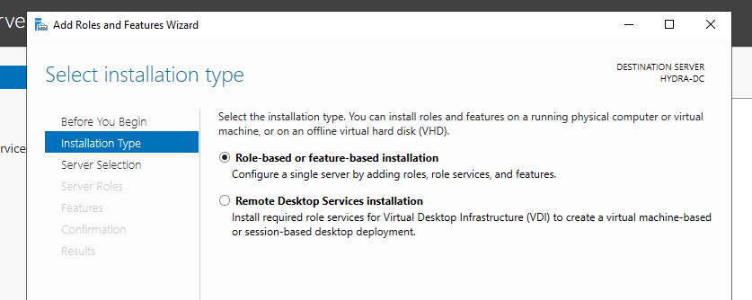

go to manage add roles/features then next then

then select next then next then

then next next
then clicked on the flag yellow one

click on add a new forest

.local is necessary lke u couldve also used .com or .in types

then same paassword
then next next
then finally click install and ur machine would then be rebooted
so now the screen says MARVEL/Administrator
that means we are logging into domain of marvel as the adminsitraotr